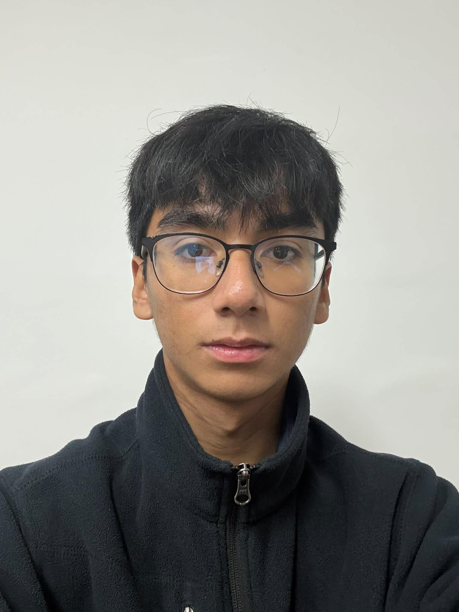
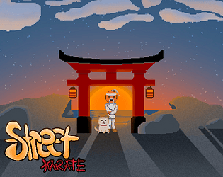
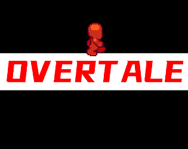
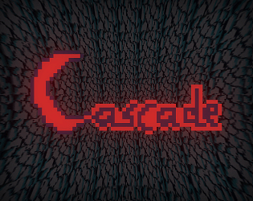
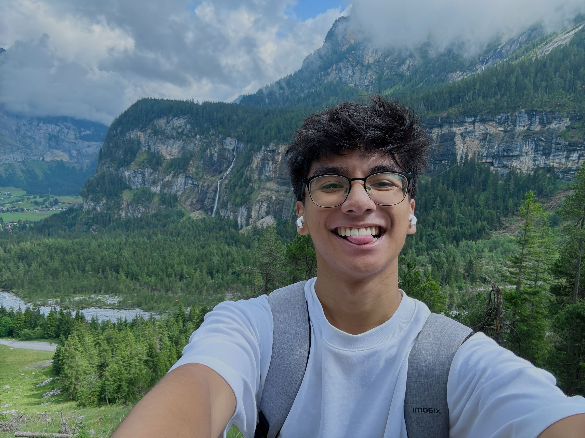

Education
Malta College of Arts, Science and Technology
Bachelor of Science (Honours) in Digital Games Development
GAME DEVELOPER · MALTA

Yo, I’m Jeryc! I build games, explore ideas, and play a little too much.
Three projects. Different challenges. Plenty learned.

Street Karate is a game made inspired by the game Street Fighter. It was made during the MCAST hosted Retro GameJam. It has a simple concept where two players combat head to head to see who wins.
During this GameJam, I was assigned as the main programmer; primarily focusing on all the mechanics that will be used throughout the game, whilst also incorporating the UI and animations into the game.

This home assignment for my 'Object Oriented Programming' class had been one of my trickiest assignments, yet one that felt the most accomplishing. Overtale is a game where the player gets trapped in a dungeon and has to search different identical rooms in order to find keys. Upon unlocking all keys, a portal activates and the player can escape. However, there are traps and monsters around that will try to harm you, so watch out!
For this game, I had programmed all the code and mechanics myself (with aid from the lecturer). Creating the environment, as well as learning how to try procedural content generation for the first time were great challenges, yet it was a satisfying learning milestone. This had also been a change in coding style; where we had been used to creating one script for the whole game, now we had to use OOP in order to organize this project.

Cascade is a game created for the Unity GameJam which had the theme 'Chain Reaction'. In this game, the player places three different types of bombs (Cross, Plus, Radius) in a grid-like field in order to hit randomly placed barrels throughout the level. These barrels give points, whilst each level has a score threshold.
During this GameJam, I was assigned as a Game Tester. Finding bugs, solving them, as well as adding quality of life changes to ensure smooth gameplay, while the main programmer codes the core game mechanics.
Bachelor of Science (Honours) in Digital Games Development
During my summer internship at Quantasoft, I used an Orbbec depth camera to scan a physical model and capture its measurements. I processed the scan data in Blender to create a 3D model and helped develop a WebGL application to display it interactively.
During my time at MITA, I provided IT support to clients, helping resolve technical issues related to Microsoft 365 and assisting with local software upgrades. I also responded to reported queries, guiding users through troubleshooting steps and communicating solutions clearly. This experience strengthened my problem-solving and communication skills while giving me practical experience supporting users in a professional IT environment.

I'm Jeryc. An aspiring game developer based in Malta who is currently studying a Bachelor's Degree in Digital Games Development in MCAST.
I mainly excel in coding, yet take a lot of interest in the creative side of game development (especially 3D Modelling!).
Away from technology, I really enjoy playing volleyball, travelling, and going on hikes!
Interested in working together? Get in touch.